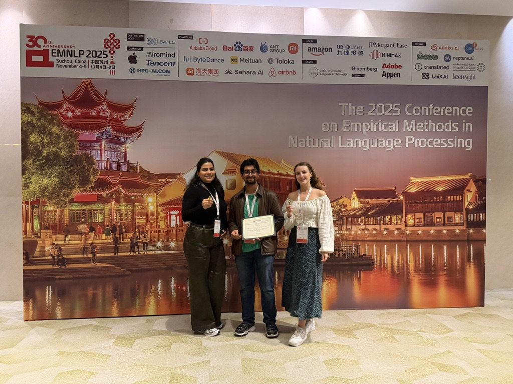

Service, Organising & Grants
Convening & Community
Seminar series, workshops, and conferences I organise across minds and machines, the research communities I help build, and the grants and awards that fund the work.
Organising & Convening
Seminars, Workshops & Conferences
Much of my time goes into building the venues where this research happens — a weekly seminar series, international workshops on human-scale AI, and a phonology conference hosted at Cambridge.

NLIP Seminar Series
Organiser · Natural Language & Information Processing group, Dept. of Computer Science & Technology, University of Cambridge. I run the weekly NLIP seminar — inviting and hosting speakers on language models, evaluation, interpretability, tokenisation and theoretical linguistics, and coordinating the annual socials for new PhD students.
BabyVLM Workshop — NeurIPS 2026
Co-organiser · Atlanta, GA. A workshop on developmentally plausible multimodal systems: how can vision-language models learn as sample-efficiently as human infants? With an accompanying shared task on infant-scale VLMs (results at CVPR 2027).
BabyLM Challenge & Workshop
Co-organiser · Now in its 4th year at EMNLP 2026 (Budapest), with a new multilingual track. The community around sample-efficient pretraining on a developmentally plausible corpus (~100M words, roughly a child's input) — central to my research programme.
OCP23 — Old-World Conference in Phonology
Organising committee · 23rd Old-World Conference in Phonology, Gonville & Caius College, Cambridge, 14–16 January 2026. Helped host ~150 phonologists at Caius.
Cambridge Language Sciences Symposium 2025
Poster-session organiser · “Ambitions for Language Science in 2050”, Magdalene College, Cambridge, 27 November 2025 — the annual gathering of Cambridge's cross-disciplinary language-sciences community.
The Human in the Loop
Human–AI Collaboration in Language Assessment · A Cambridge symposium (Computer Laboratory, May 2026) on the reliability, fairness and transparency of AI in language assessment — supported by the AI@Cam project Improving Language Equity and Inclusion through AI.
Grants & Awards
Funded Research & Recognition
Competitive funding and paper awards supporting equitable, human-scale language modelling.
xBLiMPs — Advancing Equitable Linguistic Capability Evaluation of Language Models Across Low-Resource Languages
A Language Sciences Incubator Fund award, co-funded by AI@Cam under “Improving language equity and inclusion through AI”. The project builds BLiMP-style minimal-pair datasets — roughly 100 sentence pairs across at least ten grammatical phenomena — for under-served languages including Welsh, Catalan, Basque, Persian and Tagalog, validated with native speakers.
With Catherine Arnett (EleutherAI), Prof. Paula Buttery and Dr Andrew Caines (Computer Science & Technology).
Two Outstanding Paper Awards
Recognised at the BabyLM Workshop (EMNLP 2025) for work on human-scale language modelling — Teacher Demonstrations in a BabyLM's Zone of Proximal Development and Looking to Learn: Token-wise Dynamic Gating for Low-Resource Vision-Language Modelling.